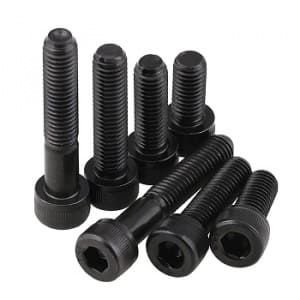

ISO 4762 (DIN 912) Винт (болт) с цилиндрической головкой и внутренним шестигранником
Стандарт
DIN 912
ISO
ISO 4762
Цена от
0,49 ₽
Размерный ряд
до M72
Винты » ISO 4762 (DIN 912) Винты (болты) с цилиндрической головкой и внутренним шестигранником
Варианты и размеры (1)
| Наименование | Размер | Длина, мм | Материал | Покрытие | Цена |
|---|---|---|---|---|---|
| ISO 4762 (DIN 912) Винт (болт) с цилиндрической головкой и внутренним шестигранником M20 | M20 | 1,30 ₽ |